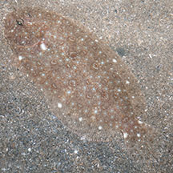
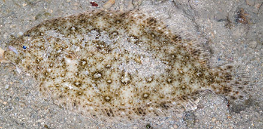
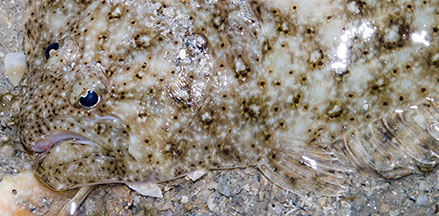
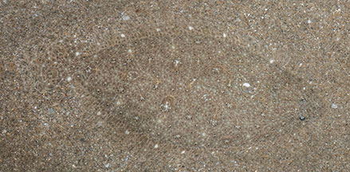
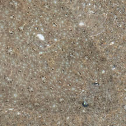
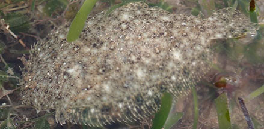

|
|
| fishes text index | photo index |
| Phylum Chordata > Subphylum Vertebrate > fishes > Order Pleuronectiformes |
| Large-tooth
flounders Family Paralichthyidae updated Sep 2020
Where seen? These large flatfishes are seen on some of our shores, on sandy areas near seagrasses or near coral reefs. What are large-tooth flounders? Large-tooth flounders are flatfishes belonging to the Family Paralichthyidae (they were previously placed in Family Bothidae). According to FishBase: the family has 16 genera and 86 species. They are found in the Atlantic, Indian and Pacific oceans. Features: Grows to about 40cm long, those seen about 15-20cm. Body flat but typical fish-shaped. The head is large with bulbous eyes, both on the left side. The tail fin is well separated from the dorsal and anal fins. The tail fin is somewhat pointed over the middle portion. Has a fully developed lateral line on the blind side as well as the eyed side. The lateral line on the eyed side makes a distinctive curve over the pectoral fin (not really obvious in a living fish). The mouth is large, filled with teeth and many have enlarged canine teeth. The eyed side is usually speckled with spots of various sizes and matches the colour of its sandy surroundings. Sometimes confused with other flatfishes. The Oriental sole looks very similar but it is right-eyed. The Three-spot flounder looks similar, is left-eyed too, but is more circular and has three large spots. Here's more on how to tell apart the flatfish families commonly seen. |
 Some species have a white patch under the pectoral fin. Changi, Jul 06. |
 Tail fin well separated from dorsal and anal fins. Pulau Semakau, Sep 05 |
 Eyes on the left side. Large mouth with canine teeth. Pelvic fin. |
| What do they eat? Large-tooth
flounders hunt animals and fishes living on the bottom of the sea.
They can swim quickly and are active during the day. Human uses: Some larger species are considered excellent to eat and are economically important. |
*Species are difficult to positively identify without close examination.
On this website, they are grouped by large external features for convenience of display.
| Large-tooth flounders on Singapore shores |
On wildsingapore
flickr
|
| Other sightings on Singapore shores |
 Kusu Island, Jun 24 Photo shared by Marcus Ng on facebook. |
 Kusu Island, Jun 24 Photo shared by Marcus Ng on facebook. |
 Cyrene Reef, Jan 19 Photo shared by Jianlin Liu on facebook. |
| Family
Paralichthyidae recorded for Singapore from Wee Y.C. and Peter K. L. Ng. 1994. A First Look at Biodiversity in Singapore.
|
Links
References
|